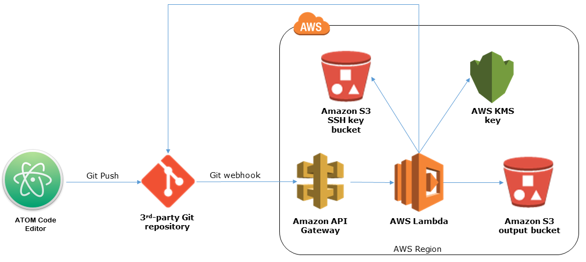

This page will showcase some of the projects I have learned to develop and structure. It will be a living document of what I am working on at the moment as I learn different languages and new ideas for the website.
One of the main reasons I became interested in coding was to better understand how software developers have moved to a more continuous development and integration cycle. Basically they work on coding a small piece of an application or website and when it meets the intended functionality and tests successfully it moves through to production in an automated fashion. This allows the developer to move to the next piece they want to deliver for their customer.
This is the reason I chose some of the tools and setup you'll see in my architecture so I could specifically learn and understand the systems outlined as they are all new to me. My goal is to establish the automation I noted above so I'm able to focus on the changes I want to do to the website or applications and when ready push them through a pipeline of automation until they are on my production website. There will be other pieces I might add to the architecture if I am able to get them to work. Many of the instructions and knowledge in this type of architecture is not written for the novice and takes time and trial and error.
In the above architecture is goes from left to right on how my process flows. I start with creating any code for my website within Atom. Atom has an integration built into it that allows you to push your changes to a Git repository. You will need to get an account at Github which is free and the Atom tool has a guide to help. I make any updates needed in Atom and those changes also show up in a panel for Git in the Atom tool. When your done with all your changes and ready to push them to the version repository (Git) you can push a few quick buttons and they will upload to your Git site. From here its a bit more complicated and I may break this section up more to explain. I am still working on the AWS parts in the diagram to get all the flows to work and there is command line work needed which I am brushing up on all well. The process does work and your files will arrive to your Amazon hosted web bucket where your site is.